R introduction
諸設定
ライブラリの読み込み
library(tidyverse)
library(leaflet)
library(DT)
library(GGally)
library(DiagrammeR)
library(revealjs)
library(htmltools)
library(gridExtra)
library(ggmosaic)
library(vcd)
library(raster)
library(sf)
library(car)
library(clinfun) # for jonckheere.test変数の読み込み
set.seed(123)
options(digits = 3)
theme_set(
theme_bw() +
theme(text = element_text(size = 20))
)
dat_hd <- read.table("heart/heart.dat", header = T) %>%
dplyr::mutate(
sex = factor(sex, labels = c("female", "male")),
cp = factor(cp, labels = c("typ_ang", "atyp_ang", "non_ang", "asymp")),
fbs = factor(fbs, labels = c("<120", ">120")),
restecg = factor(restecg, labels = c("norm", "st_abnorm", "lv_hypt")),
exang = factor(exang, labels = c("no", "yes")),
slope = factor(slope, labels = c("up", "flat", "down")),
thal = factor(thal, labels= c("norm", "fdef", "rdef")),
hd = factor(hd, labels = c("abs", "prs"))
)R is a free software environment for statistical computing and graphics
総合プラットフォームとしてのR
- データ整理・変換（ラングリング）
- 雑多なデータの変換や要約値の計算
- 可視化とモデル化
- データを人間が解釈可能な形へと変換する（可視化）．
データに基づく統計モデルを構築する（モデル化）．
- データを人間が解釈可能な形へと変換する（可視化）．
- コミュニケーション
- 分析結果を他の人に伝える．
- プログラミング
- 明示的な処理プロセスのもと，共通タスクを自動化したり，新たな問題を解いたりする．
このスライドの目的：
Rの有用な機能を知ること
- 「Rでこんなことができる」と知らなければ，自分で使うメリットを想像できない．
- Rの利用価値は統計解析に限らない．このスライドでは，Rによる簡単な計算やデータの可視化を中心に，解析例を交えて紹介する．
- ソースコードの解説は行わない．興味があれば，このファイルのソース（Rintroduction.Rmd）や様々な書籍を参照すること．
R base
— Rの標準的機能
ベクトル・行列
Rでは，ベクトルや行列をそのまま扱える．
数学的演算（たとえば，積，逆行列）は既に用意されている．
a <- c(1,2,3)## [1] 1 2 3M <- matrix(
c(2,3,5,7,11,13,17,19,23),
nrow = 3)## [,1] [,2] [,3]
## [1,] 2 7 17
## [2,] 3 11 19
## [3,] 5 13 23M %*% a## [,1]
## [1,] 67
## [2,] 82
## [3,] 100solve(M)## [,1] [,2] [,3]
## [1,] -0.0769 -0.769 0.6923
## [2,] -0.3333 0.500 -0.1667
## [3,] 0.2051 -0.115 -0.0128ユーザー定義関数
他のプログラミング言語同様，自分で関数を定義できる．
そのため，おおよそ考え付く全ての計算が可能．
funcA <- function(var1, var2){
return(var1 * 2 + var2 * 0.1)
}funcA(var1 = 10, var2 = 2)## [1] 20.2データフレーム
統計解析等では「データフレーム」を利用する．
データフレームは，列が変数，行がデータ，を表す．
d <- data.frame(x = runif(10), y = runif(10)+0.3)| x | y |
|---|---|
| 0.288 | 1.257 |
| 0.788 | 0.753 |
| 0.409 | 0.978 |
| 0.883 | 0.873 |
| 0.940 | 0.403 |
| 0.046 | 1.200 |
| 0.528 | 0.546 |
| 0.892 | 0.342 |
| 0.551 | 0.628 |
| 0.457 | 1.255 |
クロス集計
ちょっとしたクロス集計（度数分布）は，1行でできる．
たとえば，cpの度数分布．
xtabs(~cp, dat_hd)## cp
## typ_ang atyp_ang non_ang asymp
## 20 42 79 129xtabs(~cp+hd, dat_hd)## hd
## cp abs prs
## typ_ang 15 5
## atyp_ang 35 7
## non_ang 62 17
## asymp 38 91プロット
EZRで見た様なプロット機能が使える．
ただし，今はより多機能のggplotを使うのが一般的（後述）．
boxplot(d$x, d$y)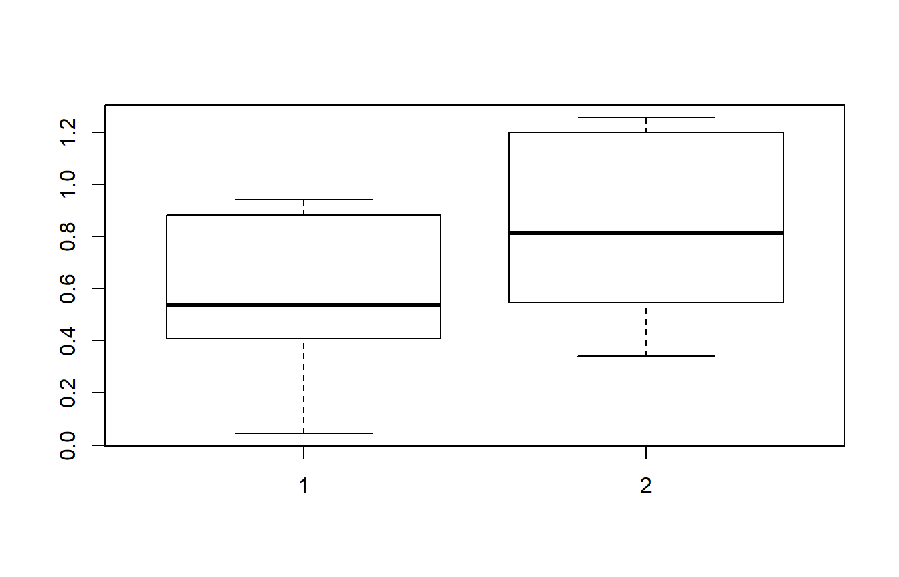
統計学的検定
EZRで見た様な統計学的検定が利用可能．
あらゆる詳細な設定が可能で，計算結果の正しさは検証済み．
wilcox.test(d$x,d$y,alternative = "two.sided", mu = 0, paired = F, exact = T)##
## Wilcoxon rank sum test
##
## data: d$x and d$y
## W = 32, p-value = 0.2
## alternative hypothesis: true location shift is not equal to 0統計モデル
統計モデルも1行で構築できる．
model_hd <- lm(oldpeak ~ cp + mthalach + cp + chol, data = dat_hd)
summary(model_hd)##
## Call:
## lm(formula = oldpeak ~ cp + mthalach + cp + chol, data = dat_hd)
##
## Residuals:
## Min 1Q Median 3Q Max
## -1.945 -0.708 -0.247 0.551 4.965
##
## Coefficients:
## Estimate Std. Error t value Pr(>|t|)
## (Intercept) 3.63513 0.59428 6.12 3.4e-09 ***
## cpatyp_ang -1.06886 0.28491 -3.75 0.00022 ***
## cpnon_ang -0.62681 0.26219 -2.39 0.01752 *
## cpasymp -0.37572 0.25663 -1.46 0.14437
## mthalach -0.01444 0.00295 -4.89 1.8e-06 ***
## chol 0.00042 0.00124 0.34 0.73530
## ---
## Signif. codes: 0 '***' 0.001 '**' 0.01 '*' 0.05 '.' 0.1 ' ' 1
##
## Residual standard error: 1.05 on 264 degrees of freedom
## Multiple R-squared: 0.18, Adjusted R-squared: 0.165
## F-statistic: 11.6 on 5 and 264 DF, p-value: 3.7e-10データセット
解析の練習用に色々なデータセットが用意されている．
たとえば，サプリメントによる歯の成長データToothGrowth．
data("ToothGrowth")head(ToothGrowth) %>% knitr::kable()| len | supp | dose |
|---|---|---|
| 4.2 | VC | 0.5 |
| 11.5 | VC | 0.5 |
| 7.3 | VC | 0.5 |
| 5.8 | VC | 0.5 |
| 6.4 | VC | 0.5 |
| 10.0 | VC | 0.5 |
summary(ToothGrowth)## len supp dose
## Min. : 4.2 OJ:30 Min. :0.50
## 1st Qu.:13.1 VC:30 1st Qu.:0.50
## Median :19.2 Median :1.00
## Mean :18.8 Mean :1.17
## 3rd Qu.:25.3 3rd Qu.:2.00
## Max. :33.9 Max. :2.00データの読み込み
txt，csv，xlsx，1行で必要なものを全て読み込める．
dat <- read.csv("heart/heart.dat", sep = " ")
str(dat)## 'data.frame': 270 obs. of 14 variables:
## $ age : num 70 67 57 64 74 65 56 59 60 63 ...
## $ sex : num 1 0 1 1 0 1 1 1 1 0 ...
## $ cp : num 4 3 2 4 2 4 3 4 4 4 ...
## $ sbp : num 130 115 124 128 120 120 130 110 140 150 ...
## $ chol : num 322 564 261 263 269 177 256 239 293 407 ...
## $ fbs : num 0 0 0 0 0 0 1 0 0 0 ...
## $ restecg : num 2 2 0 0 2 0 2 2 2 2 ...
## $ mthalach: num 109 160 141 105 121 140 142 142 170 154 ...
## $ exang : num 0 0 0 1 1 0 1 1 0 0 ...
## $ oldpeak : num 2.4 1.6 0.3 0.2 0.2 0.4 0.6 1.2 1.2 4 ...
## $ slope : num 2 2 1 2 1 1 2 2 2 2 ...
## $ ca : num 3 0 0 1 1 0 1 1 2 3 ...
## $ thal : num 3 7 7 7 3 7 6 7 7 7 ...
## $ hd : int 2 1 2 1 1 1 2 2 2 2 ...10000以上の様々なパッケージ
- 様々な計算がパッケージ化され，CRAN（The Cmprehensive R Archive Network）に公開されている．
- パッケージは，誰でも無料でダウンロード・利用・編集ができる．
- CRANには，現在，10,000以上のパッケージが登録されている．
- パッケージを使えば，複雑な計算であっても，簡単に，時にはパラメータを変えて，計算できる．しかも多くの場合，計算結果は正しい（誤った計算結果は指摘され，修正される）．
（例）pracmaパッケージ：様々な数値計算
たとえば，ラグランジュ補間を1つの命令(barylag)で計算可能
x_d <- c(0,100,200,300,400,500)
y_d <- c(5.7,1.8,2.7,9.7,4.1,6.2)
x <- 0:500
y <- pracma::barylag(x_d,y_d,x)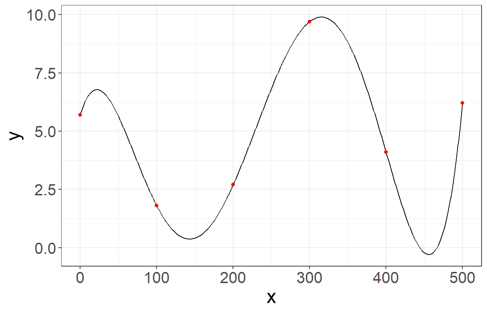
解析の再現可能性
- Rによる解析は，解析の元になったデータとスクリプトがあれば，
誰でも寸分違わず再現できる． - ソフト側で勝手な操作（例：Wordの数々のお節介）は行われない．
- Rmarkdown等の機能を使えば，ウェブページから論文まで，再現可能な「レポート」（スクリプト＋アウトプット）が作成できる．
- 世界中の人が，「R」言語でコミュニケーションを始めている！！
tidyverse
— tidyなデータラングリング
tidyデータとは？（詳しくはhttps://id.fnshr.info/2017/01/09/tidy-data-intro/）
非tidyデータの一例
- 変数（地点・時刻・天気）の並びが整然としていない
- 人間にはわかりやすくとも，データ解析には適さない

tidyデータの一例
- 変数が整然と並ぶ

tidy verse
- R studio開発者らによって開発された一連のパッケージ．
- tidyデータの諸変換（tidyr），データの操作(dplyr，purrr)，
グラフ作成（ggplot），等が含まれる． - 特に，データ「群」ごとの解析は
エクセルではなかなか実現できない機能のひとつ．
データ群の計算例①：データ群の作成
- たとえば，変数supp, dose，lenをもつデータToothGrowthを考える．
- suppはカテゴリで，OJとVCがそれぞれ30データ含まれる．カテゴリ毎に計算を行いたい場合，次の様にグループ化できると都合が良い．
グループ化前の例
| supp | dose | len |
|---|---|---|
| VC | 0.5 | 4.2 |
| \(\vdots\) | \(\vdots\) | \(\vdots\) |
| VC | 0.5 | 11.5 |
| OJ | 0.5 | 15.2 |
| \(\vdots\) | \(\vdots\) | \(\vdots\) |
| OJ | 2.0 | 23.0 |
グループ化後のイメージ
| supp | dose | len |
|---|---|---|
| VC | 30個のデータ | 30個のデータ |
| OJ | 30個のデータ | 30個のデータ |
データ群の計算例② ：データ群ごとに計算する
- グループ化したデータgrouped_TGを用意した
（計算詳細はソースファイルを見よ）． - データ群ごとに，あらゆる計算が可能．
- たとえば，lenの平均，中央値，10パーセンタイル値を求める．
grouped_TG %>%
dplyr::mutate(
len_ave = purrr::map_dbl(data, ~mean(.x$len)),
len_med = purrr::map_dbl(data, ~median(.x$len)),
len_qt10 = purrr::map_dbl(data, ~quantile(.x$len, 0.1))
)## # A tibble: 2 x 5
## # Groups: supp [2]
## supp data len_ave len_med len_qt10
## <fct> <list> <dbl> <dbl> <dbl>
## 1 VC <tibble [30 x 2]> 17.0 16.5 6.34
## 2 OJ <tibble [30 x 2]> 20.7 22.7 9.7大量のデータを効率的に処理可能
- エクセルのデータ量上限は約100万行
- Rであれば，メモリの許す限りのデータ（今の標準的なPC性能で数十億行×数十列程度）を一度に処理可能．
- 「データ群」の活用で，大規模データでも見通しの良い計算が可能．
- なお，特殊なパッケージを使えば，より大量のデータ
（狭義のビッグデータ）も処理可能．
その他，tidyverseに関連する特殊データ処理
以下の処理は，エクセルではできないか，曖昧に処理されている．
- forcats：カテゴリ変数の処理
- stringr：文字列の処理，検索や置換
- lubridate：日付・時刻の処理
- sf：GISデータの処理
ggplot
— あらゆるデータの可視化
ggplot
- tidyデータをプロットするツール．
- 考え付く事は，おおよそなんでもできる．
- ここでは，エクセルではできない特殊なプロットを中心に紹介する．
pair
講義でも扱った．プロット行列を出力できる．
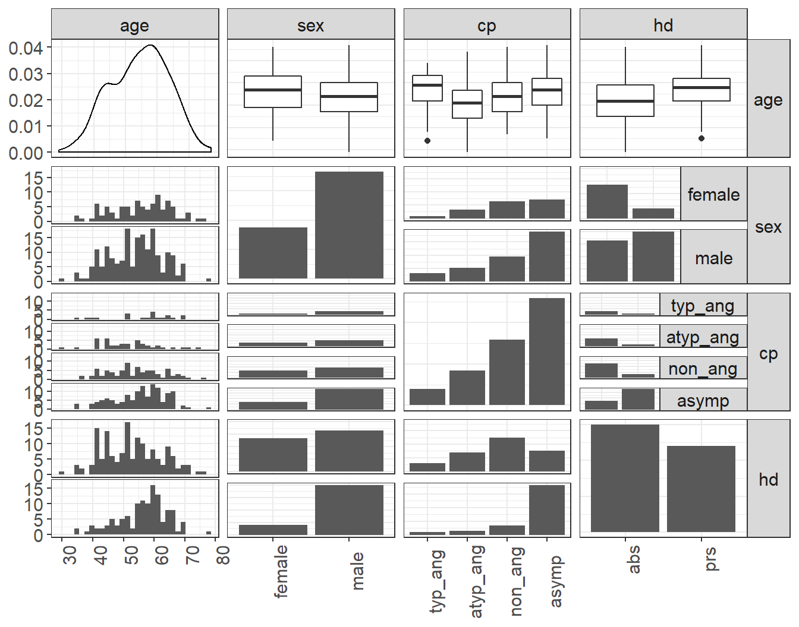
box plot / jitter plot
カテゴリ変数に対する連続変数の分布を表す．
また，適当に値をバラつかせて表示できる．
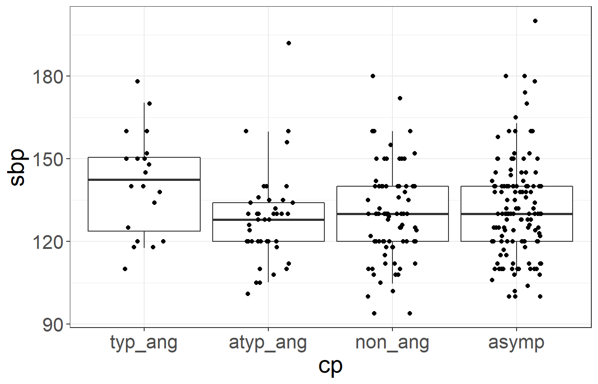
violin plot / jitter plot
カテゴリ変数に対する連続変数の密度分布を表す．

smooth line
連続変数のバラつきと共に，適当な回帰線を示す． 線形だけではなく任意の関数が指定可能で，95%信頼区間も示せる．
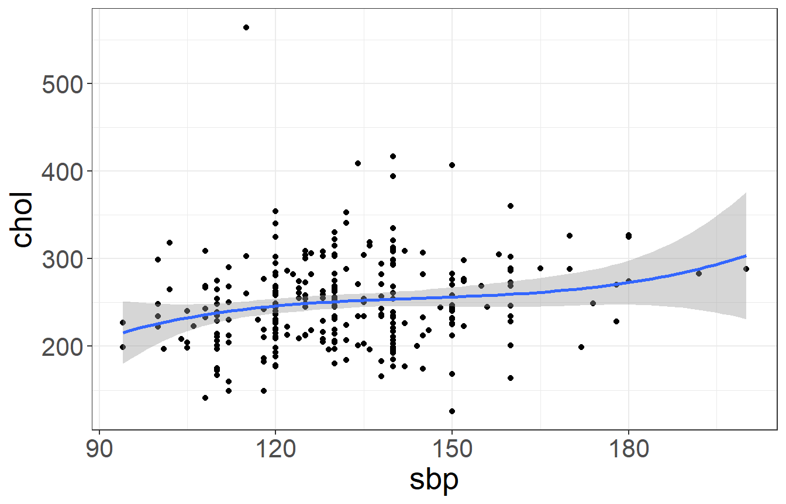
smooth line (logistic)
ロジスティック回帰分析も（単変量であれば）プロットできてしまう．
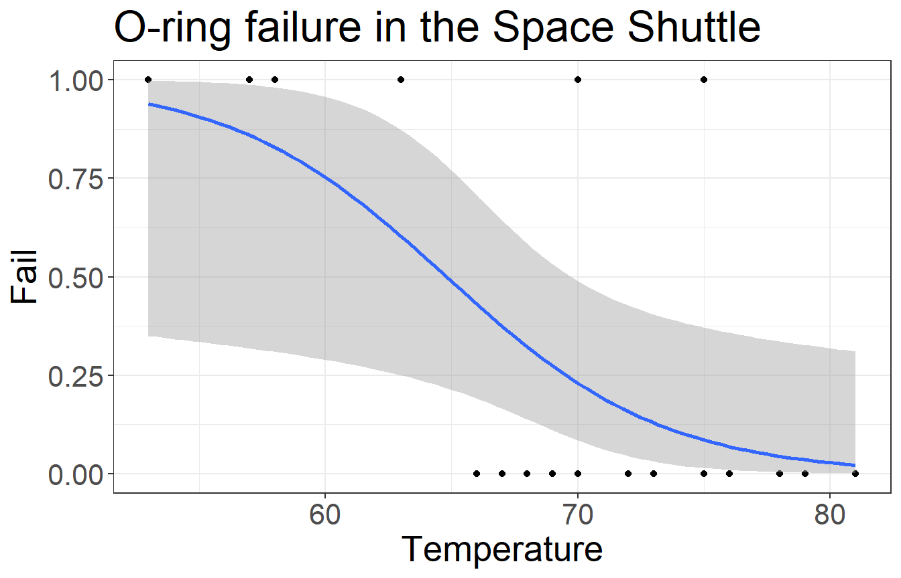
colour / shape
群ごとに色や形を設定できる．点でも，線でも．
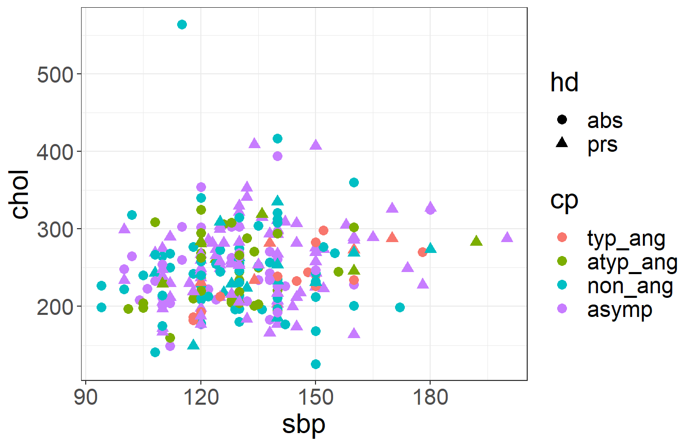
linerange / error bar
任意のエラーバーや範囲を付けられる．
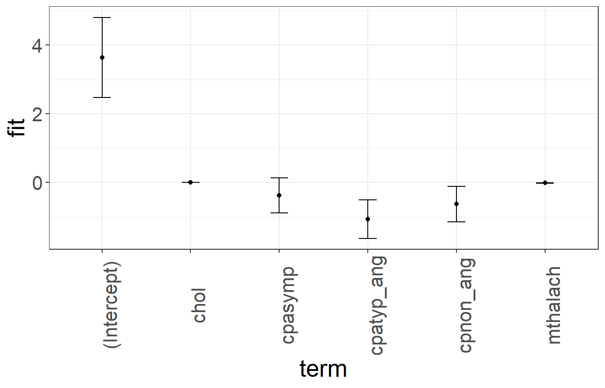
linerange / error bar
複数ある場合，ずらすこともできる．線も引ける．
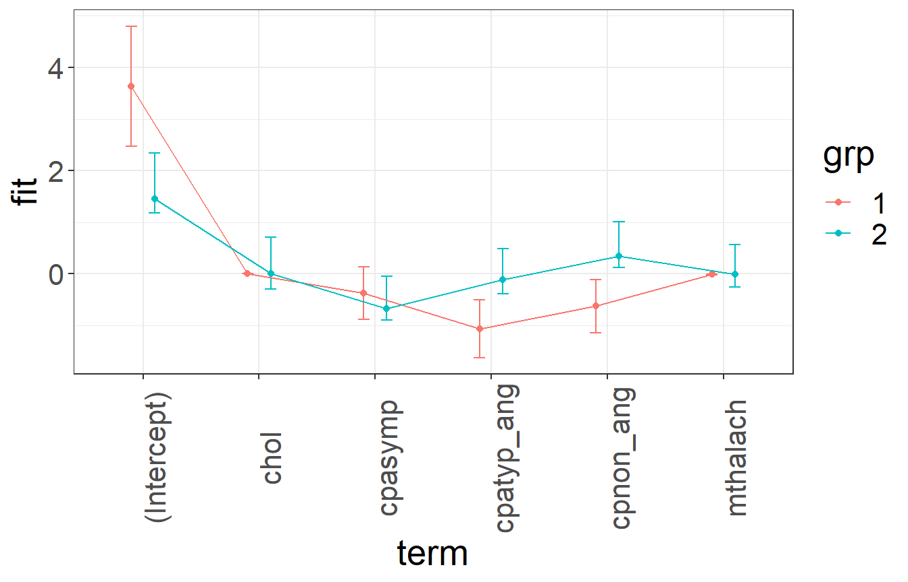
raster plot
xyzデータをプロットできる．
contour plot
等高線にすることも可能．
mosaic plot
カテゴリ変数の度数分布および偏りを示す．
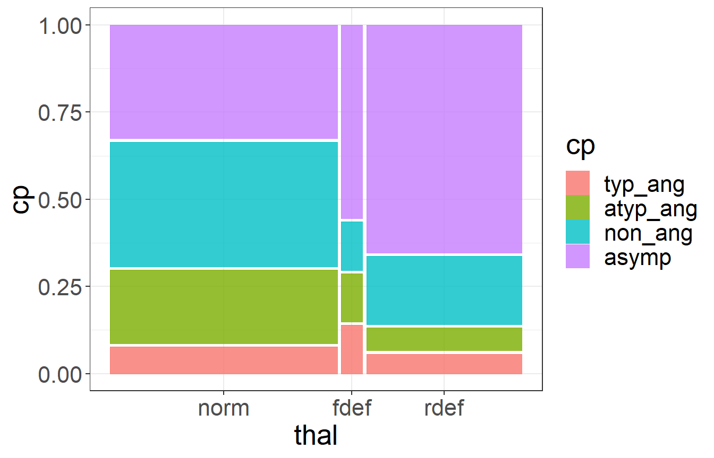
polar scale
極座標でもプロットできる．
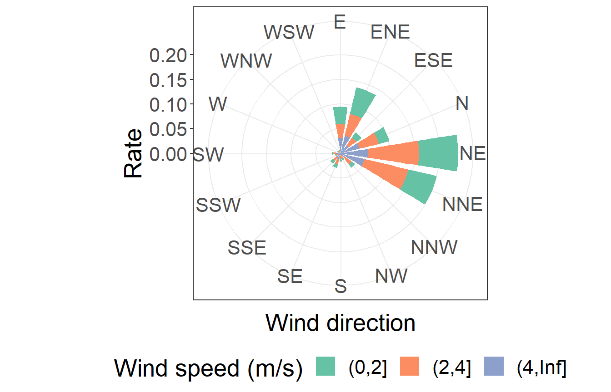
facet wrap
任意のプロットを，カテゴリ毎に分けて表示できる．
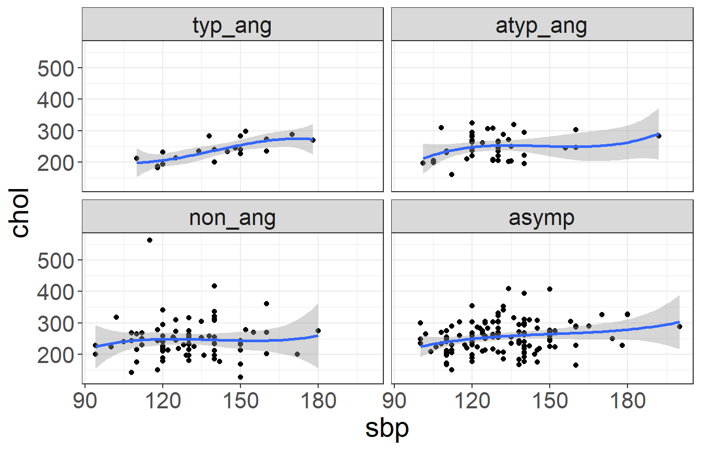
facet grid
左右に並べて表示する．上下に並べることもできる．

対数軸，任意の目盛
対数軸はもちろん，任意の場所に任意の目盛を設定できる．
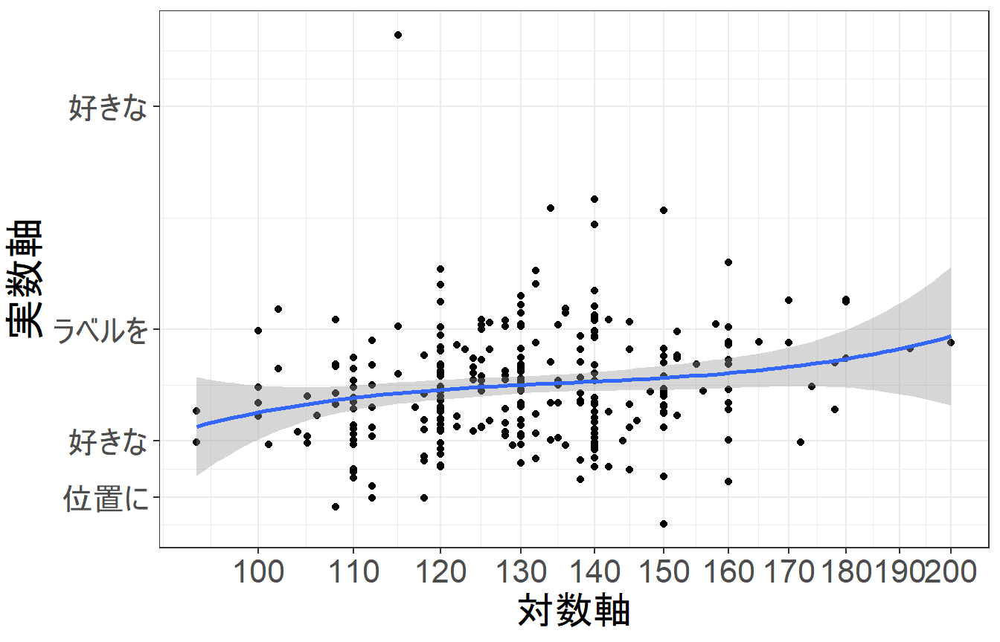
統計解析サンプル ToothGrowth
— カテゴリ×連続，交互作用
データ概観
- モルモットに異なるサプリメント（supp: OJ/VC）を異なる量（dose）与えた際の歯芽細胞の長さ（len）に関するデータ．
- suppやdoseによってlenは異なるのか？
data("ToothGrowth")
str(ToothGrowth)## 'data.frame': 60 obs. of 3 variables:
## $ len : num 4.2 11.5 7.3 5.8 6.4 10 11.2 11.2 5.2 7 ...
## $ supp: Factor w/ 2 levels "OJ","VC": 2 2 2 2 2 2 2 2 2 2 ...
## $ dose: num 0.5 0.5 0.5 0.5 0.5 0.5 0.5 0.5 0.5 0.5 ...ggplotで一気にデータを概観！
- 多少左右にバラけさせて表示
- 値の分布とdose/supp/lenの関係を一度に表示できる
ggplot(ToothGrowth,aes(dose,len,colour=supp)) +
geom_jitter(width=0.05, height = 0)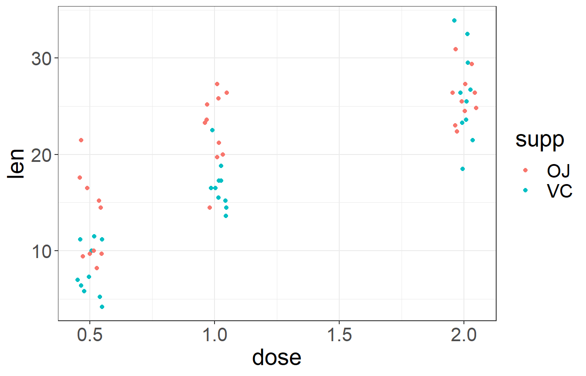
単回帰を信頼区間付きでプロット
lenがdoseに対して線形とすると・・・
ggplot(ToothGrowth,aes(dose,len)) +
geom_jitter(width=0.05, height = 0, aes(colour = supp))+
geom_smooth(method = "lm", formula = y~x) 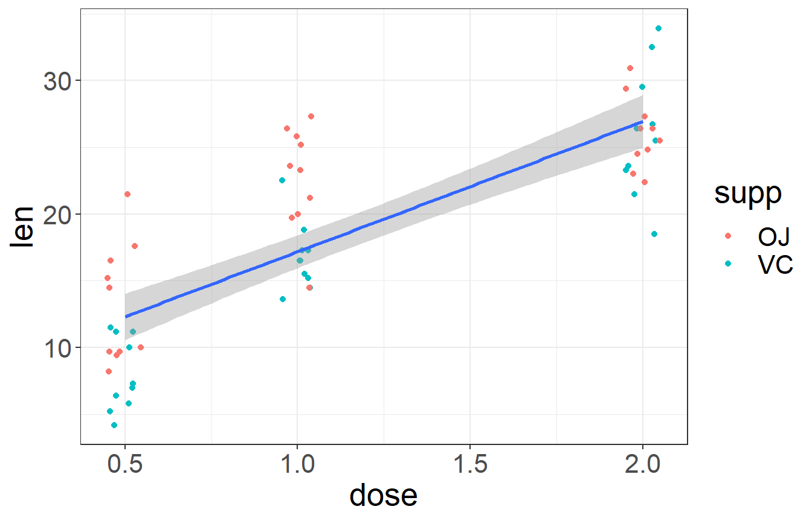
重回帰（交互作用なし）プロット
交互作用がなければ，2つの回帰式は平行．
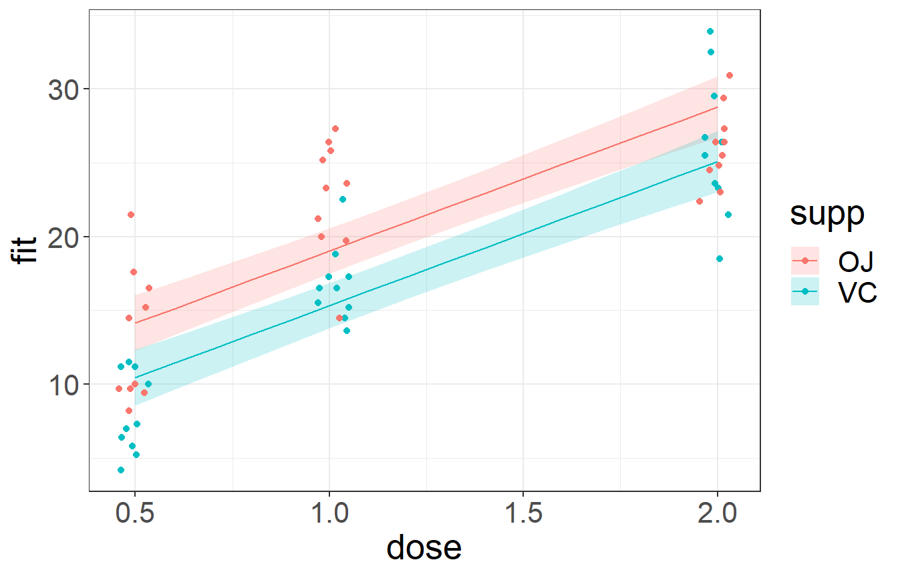
重回帰（交互作用あり）プロット
doseが小さい時にはOJとVCの差は大きいが，doseが大きい時には差は小さい．
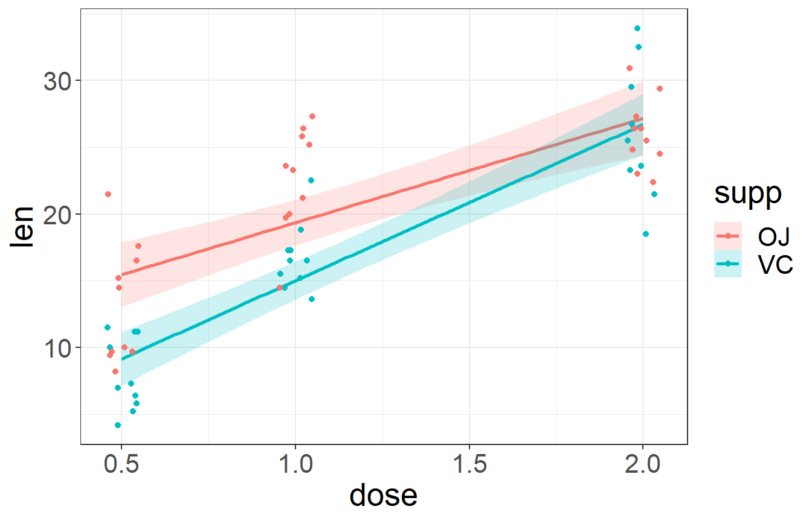
重回帰（交互作用あり，facet）プロット
図を複数に分けて表示することもできる．
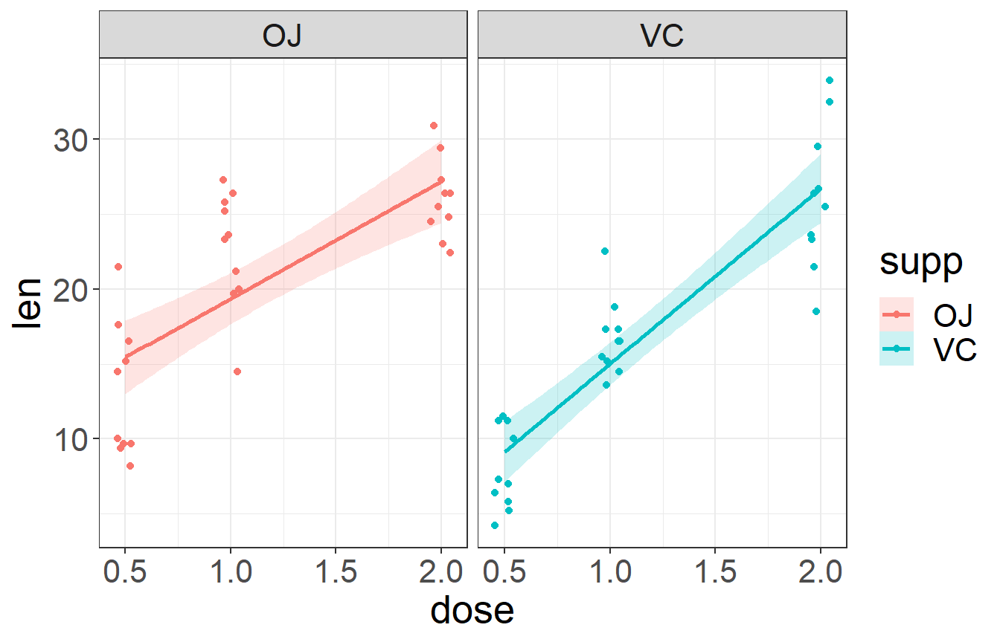
重回帰に基づくANOVA（分散分析）
- lenに対し，supp，doseおよびこれらの交互作用が検出された．
- ただし，誤差分布に「正規分布」を仮定していることに注意．
model <- lm(len ~ supp * dose, data=ToothGrowth )
car::Anova(model)## Anova Table (Type II tests)
##
## Response: len
## Sum Sq Df F value Pr(>F)
## supp 205 1 12.32 0.00089 ***
## dose 2224 1 133.42 < 2e-16 ***
## supp:dose 89 1 5.33 0.02463 *
## Residuals 934 56
## ---
## Signif. codes: 0 '***' 0.001 '**' 0.01 '*' 0.05 '.' 0.1 ' ' 1統計解析サンプル UCBAdmissions
— simpson’s paradox
データ概観
- 1973年，カリフォルニア大学バークレー校の大学院入学実績
- 女性の合格率が低く，「女性を差別している」という批判を受けた
- 本当にそうか？？
data('UCBAdmissions')
UCBAdmissions <- as.data.frame(UCBAdmissions)
str(UCBAdmissions)## 'data.frame': 24 obs. of 4 variables:
## $ Admit : Factor w/ 2 levels "Admitted","Rejected": 1 2 1 2 1 2 1 2 1 2 ...
## $ Gender: Factor w/ 2 levels "Male","Female": 1 1 2 2 1 1 2 2 1 1 ...
## $ Dept : Factor w/ 6 levels "A","B","C","D",..: 1 1 1 1 2 2 2 2 3 3 ...
## $ Freq : num 512 313 89 19 353 207 17 8 120 205 ...クロス表によるデータ概観
- 男性よりも女性の方が合格者数が少ない
- ただし，合格率は学部によって大きく異なる
性別 vs 合否
実数
| Male | Female | |
|---|---|---|
| Admitted | 1198 | 557 |
| Rejected | 1493 | 1278 |
合否割合
| Male | Female | |
|---|---|---|
| Admitted | 0.445 | 0.304 |
| Rejected | 0.555 | 0.696 |
学部 vs 合否
実数
| A | B | C | D | E | F | |
|---|---|---|---|---|---|---|
| Admitted | 601 | 370 | 322 | 269 | 147 | 46 |
| Rejected | 332 | 215 | 596 | 523 | 437 | 668 |
合否割合
| A | B | C | D | E | F | |
|---|---|---|---|---|---|---|
| Admitted | 0.64 | 0.63 | 0.35 | 0.34 | 0.25 | 0.06 |
| Rejected | 0.36 | 0.37 | 0.65 | 0.66 | 0.75 | 0.94 |
統計学的検定
- 確かに女性の方が合格率が低いが・・・
（Fisherの正確検定で不合格オッズ1.84倍） - この結果は，「受験した学部が異なる」事を反映していない．
fisher.test(xtabs(Freq~Admit+Gender, UCBAdmissions))##
## Fisher's Exact Test for Count Data
##
## data: xtabs(Freq ~ Admit + Gender, UCBAdmissions)
## p-value <2e-16
## alternative hypothesis: true odds ratio is not equal to 1
## 95 percent confidence interval:
## 1.62 2.09
## sample estimates:
## odds ratio
## 1.84多重ロジスティック回帰による解析
学部で調整すると，性別による差は検出されない
UCBAdmissions_rev <- tidyr::spread(UCBAdmissions, key = "Admit", value = "Freq")
model <- glm(cbind(Admitted, Admitted + Rejected) ~ Gender + Dept, data = UCBAdmissions_rev, family = binomial)
summary(model)##
## Call:
## glm(formula = cbind(Admitted, Admitted + Rejected) ~ Gender +
## Dept, family = binomial, data = UCBAdmissions_rev)
##
## Deviance Residuals:
## 1 2 3 4 5 6 7 8
## -0.5579 -0.0197 0.7512 -0.0412 0.8150 -0.3043 1.4363 0.0913
## 9 10 11 12
## -0.5615 0.0427 -0.5802 0.3043
##
## Coefficients:
## Estimate Std. Error z value Pr(>|z|)
## (Intercept) -0.4457 0.0531 -8.39 < 2e-16 ***
## GenderFemale 0.0457 0.0721 0.63 0.53
## DeptB -0.0144 0.0848 -0.17 0.86
## DeptC -0.6314 0.0912 -6.92 4.5e-12 ***
## DeptD -0.6561 0.0915 -7.17 7.3e-13 ***
## DeptE -0.9644 0.1131 -8.53 < 2e-16 ***
## DeptF -2.3187 0.1630 -14.23 < 2e-16 ***
## ---
## Signif. codes: 0 '***' 0.001 '**' 0.01 '*' 0.05 '.' 0.1 ' ' 1
##
## (Dispersion parameter for binomial family taken to be 1)
##
## Null deviance: 414.5541 on 11 degrees of freedom
## Residual deviance: 4.4521 on 5 degrees of freedom
## AIC: 90.79
##
## Number of Fisher Scoring iterations: 3多重ロジスティック回帰モデルの有意性
- 講義では触れなかったが，多重ロジスティック回帰モデルについて，ANOVAに似た手法で変数の有意性を示せる．
- ANOVAとは異なり，「正規分布」等の仮定は用いられていない．
car::Anova(model)## Analysis of Deviance Table (Type II tests)
##
## Response: cbind(Admitted, Admitted + Rejected)
## LR Chisq Df Pr(>Chisq)
## Gender 0 1 0.53
## Dept 368 5 <2e-16 ***
## ---
## Signif. codes: 0 '***' 0.001 '**' 0.01 '*' 0.05 '.' 0.1 ' ' 1多変量解析の結果は可視化で一目瞭然
女性の方が高難度の学部に挑戦し，その結果，合格率が下がっている
vcd::mosaic(Admit~Gender+Dept,data=UCBAdmissions,direction=c('v','v','h'))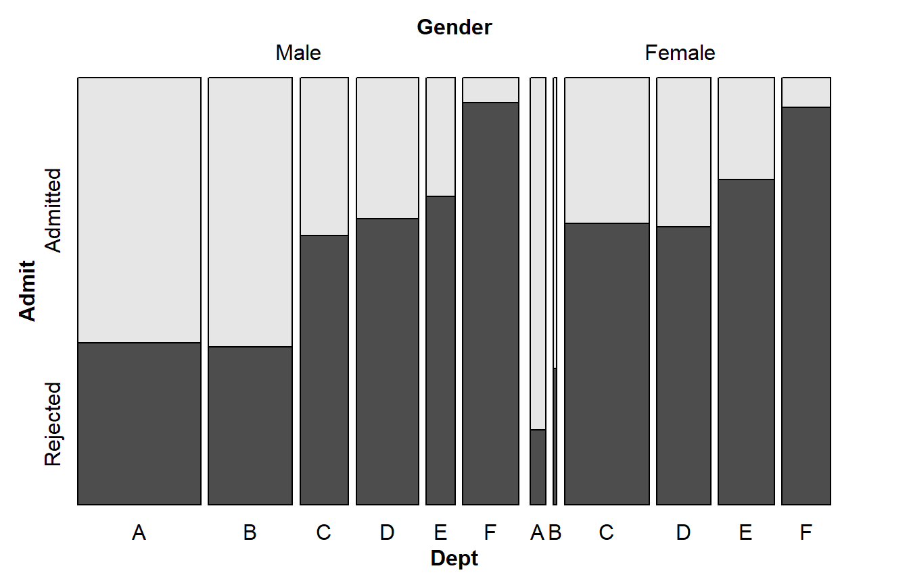
なお，東京医科大学（2016～2018）では・・・
「入試差別が行われていた」ことが問題になったケース．
他の交絡因子の可能性は排除できないが，有意に女性合格者が少ない．
d_tokyoika <- data.frame(
Gender = factor(rep(c("Male", "Female"), each = 2), levels = c("Male", "Female")),
Admit = rep(c("Admitted", "Rejected"), 2),
Freq = c(470, 6562, 210, 4512)
)
fisher.test(xtabs(Freq~Admit+Gender, d_tokyoika))##
## Fisher's Exact Test for Count Data
##
## data: xtabs(Freq ~ Admit + Gender, d_tokyoika)
## p-value = 3e-07
## alternative hypothesis: true odds ratio is not equal to 1
## 95 percent confidence interval:
## 1.30 1.83
## sample estimates:
## odds ratio
## 1.54なお，北大医学部（2016～2018）では・・・
有意水準0.05なら，差は「検出されない」．
ただし，他の交絡因子の可能性は排除できない．
d_hokudai <- data.frame(
Gender = factor(rep(c("Male", "Female"), each = 2), levels = c("Male", "Female")),
Admit = rep(c("Admitted", "Rejected"), 2),
Freq = c(245, 534, 64, 189)
)
fisher.test(xtabs(Freq~Admit+Gender, d_hokudai))##
## Fisher's Exact Test for Count Data
##
## data: xtabs(Freq ~ Admit + Gender, d_hokudai)
## p-value = 0.07
## alternative hypothesis: true odds ratio is not equal to 1
## 95 percent confidence interval:
## 0.973 1.901
## sample estimates:
## odds ratio
## 1.35その他の様々な可視化ツール
leaflet
緯度経度を指定して，地図上にプロットできる．
作成例
大気拡散計算（これも簡単なものならRで可能）とあわせると，
拡散の様子をグラフィカルに表示できる．

Diagramme
任意のダイアグラムが書ける．
Rmarkdown
- Rのコードを起点にして，md，html，pdf，等の様々なフォーマットに結果を出力できる．このスライドも，Rを使って作っている．
- 「.rmd」ファイルにスクリプトが保存されている．
- 再現可能性が確保されている．つまり，データや解析方法が後からでも確認できる．
まとめ
— Rの利用価値
EZR/Rの利用価値は統計解析に留まらない
- EZRの利用価値
- データ型に応じた分析
- 統計解析
- データ分布のプロット
- Rの利用価値
- 行列計算をはじめとした数値計算
- 大規模データの処理
- 綺麗なグラフの作成
- 特殊なグラフの作成
参考文献
- Hadley Wickham, Garrett Grolemund. 黒川利明訳．
Rではじめるデータサイエンス．オライリー・ジャパン．2017． - Winston Chang．石井弓美子他訳．
Rグラフィックスクックブック．オライリー・ジャパン．2013．
enjoy!
環境
sessionInfo()## R version 3.6.2 (2019-12-12)
## Platform: x86_64-w64-mingw32/x64 (64-bit)
## Running under: Windows 10 x64 (build 17763)
##
## Matrix products: default
##
## locale:
## [1] LC_COLLATE=Japanese_Japan.932 LC_CTYPE=Japanese_Japan.932
## [3] LC_MONETARY=Japanese_Japan.932 LC_NUMERIC=C
## [5] LC_TIME=Japanese_Japan.932
##
## attached base packages:
## [1] grid stats graphics grDevices utils datasets methods
## [8] base
##
## other attached packages:
## [1] clinfun_1.0.15 car_3.0-3 carData_3.0-2 sf_0.8-1
## [5] raster_2.8-19 sp_1.3-1 vcd_1.4-4 ggmosaic_0.2.1
## [9] gridExtra_2.3 htmltools_0.3.6 revealjs_0.9 DiagrammeR_1.0.1
## [13] GGally_1.4.0 DT_0.6 leaflet_2.0.2 forcats_0.4.0
## [17] stringr_1.4.0 dplyr_0.8.4 purrr_0.3.3 readr_1.3.1
## [21] tidyr_1.0.2 tibble_2.1.3 ggplot2_3.2.1 tidyverse_1.3.0
##
## loaded via a namespace (and not attached):
## [1] colorspace_1.4-1 ellipsis_0.3.0 class_7.3-15
## [4] rio_0.5.16 fs_1.3.0 rstudioapi_0.10
## [7] fansi_0.4.0 mvtnorm_1.0-10 lubridate_1.7.4
## [10] xml2_1.2.2 codetools_0.2-16 knitr_1.23
## [13] jsonlite_1.6 broom_0.5.2 dbplyr_1.4.2
## [16] shiny_1.3.2 compiler_3.6.2 httr_1.4.1
## [19] productplots_0.1.1 backports_1.1.4 assertthat_0.2.1
## [22] lazyeval_0.2.2 cli_1.1.0 later_0.8.0
## [25] visNetwork_2.0.7 tools_3.6.2 igraph_1.2.4.1
## [28] gtable_0.3.0 glue_1.3.1 reshape2_1.4.3
## [31] Rcpp_1.0.1 cellranger_1.1.0 rgexf_0.15.3
## [34] vctrs_0.2.2 nlme_3.1-142 crosstalk_1.0.0
## [37] lmtest_0.9-37 xfun_0.7 openxlsx_4.1.0.1
## [40] rvest_0.3.5 mime_0.7 lifecycle_0.2.0
## [43] XML_3.98-1.20 MASS_7.3-51.4 zoo_1.8-6
## [46] scales_1.0.0 hms_0.5.3 promises_1.0.1
## [49] RColorBrewer_1.1-2 yaml_2.2.0 curl_3.3
## [52] downloader_0.4 reshape_0.8.8 stringi_1.4.3
## [55] highr_0.8 Rook_1.1-1 e1071_1.7-1
## [58] zip_2.0.2 rlang_0.4.4 pkgconfig_2.0.2
## [61] pracma_2.2.5 evaluate_0.14 lattice_0.20-38
## [64] labeling_0.3 htmlwidgets_1.3 tidyselect_0.2.5
## [67] plyr_1.8.4 magrittr_1.5 R6_2.4.0
## [70] generics_0.0.2 DBI_1.0.0 pillar_1.4.3
## [73] haven_2.2.0 foreign_0.8-72 withr_2.1.2
## [76] units_0.6-3 abind_1.4-5 modelr_0.1.5
## [79] crayon_1.3.4 utf8_1.1.4 KernSmooth_2.23-16
## [82] plotly_4.9.0 rmarkdown_1.12 viridis_0.5.1
## [85] readxl_1.3.1 data.table_1.12.2 influenceR_0.1.0
## [88] reprex_0.3.0 digest_0.6.18 classInt_0.4-2
## [91] xtable_1.8-4 httpuv_1.5.1 brew_1.0-6
## [94] munsell_0.5.0 viridisLite_0.3.0